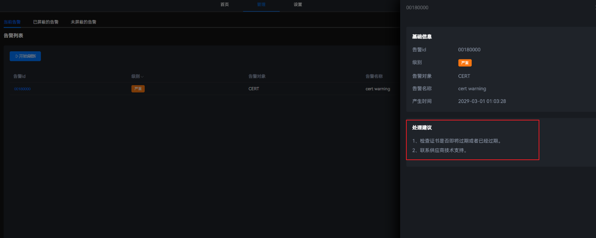
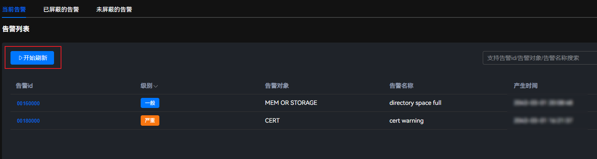

使用场景
当系统管理的外部设备发生故障时，告警会上报至Atlas IES。运维人员可以通过告警页面获取告警相关信息，及时排查故障，提升运维效率。
操作步骤
- 在主菜单中选择。
进入“当前告警”界面，可查看当前系统上报的告警数量、告警ID、级别、告警对象、告警名称以及产生时间。
图1 当前告警
- 单击目标告警所在行的告警ID，可查看对于本条告警的处理建议。图2 处理意见
 - （可选）单击“开始刷新”，自动刷新告警信息。图3 启动刷新

用户根据告警处理建议清除告警后，可通过单击“开始刷新”确定告警是否消除。